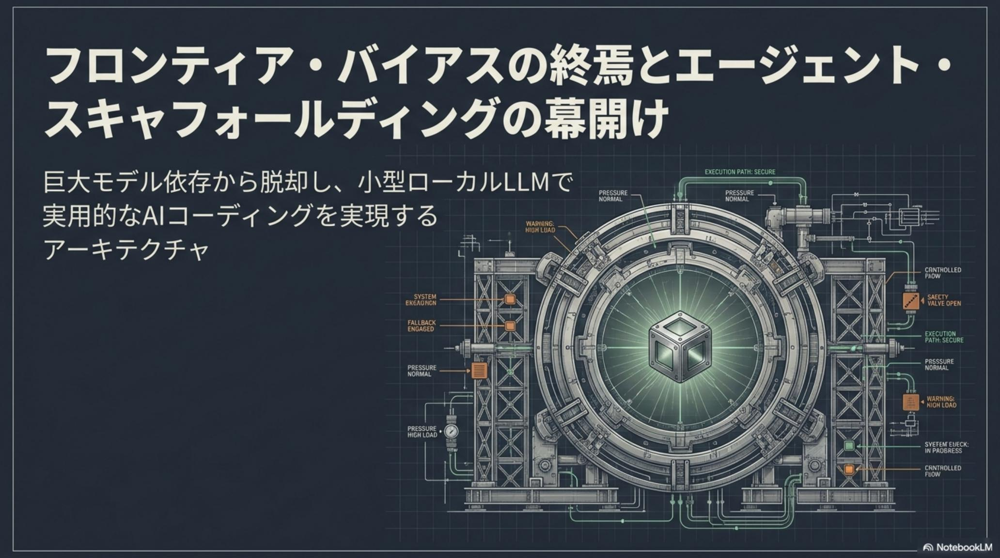
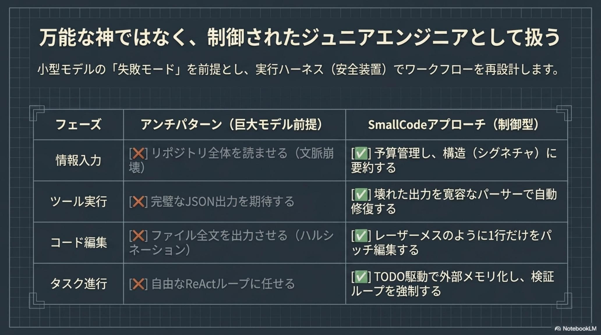
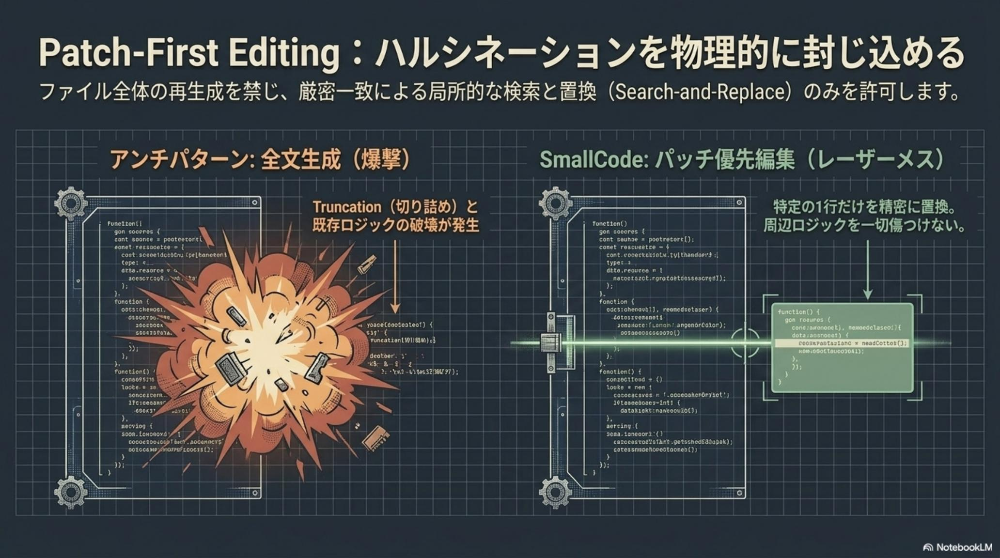
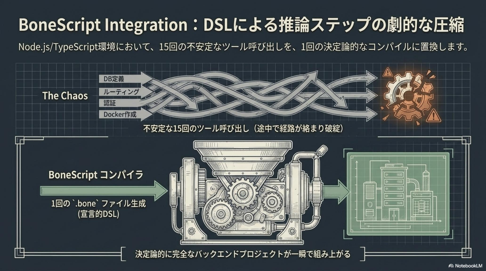
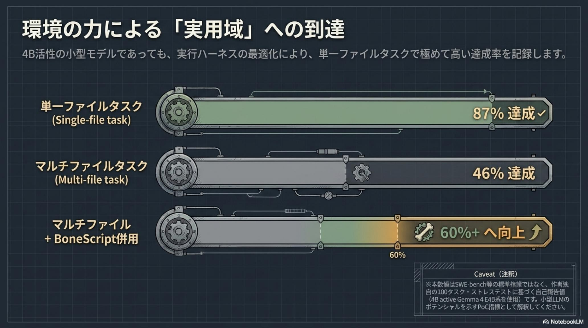
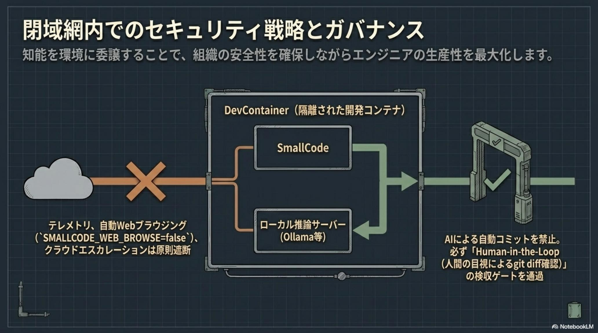
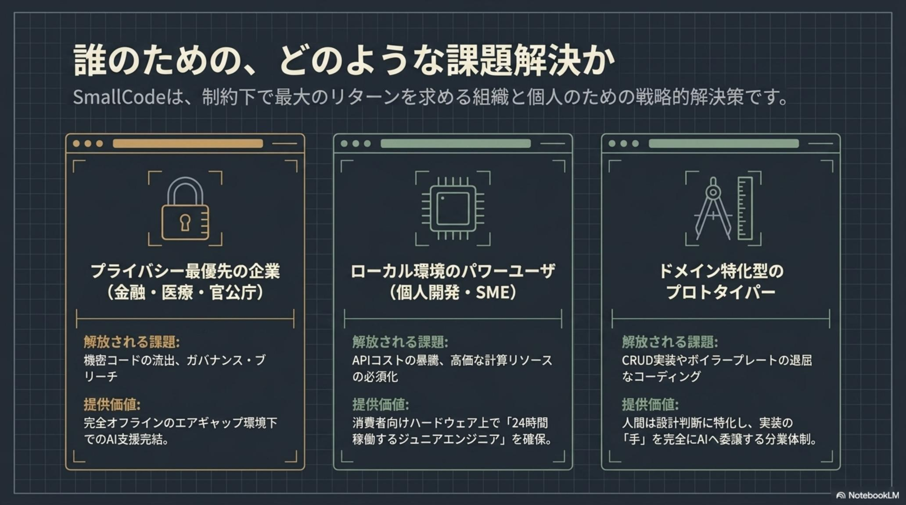
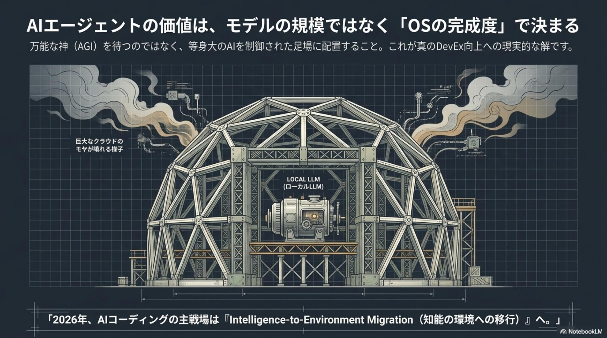

指示の忘却、会話の迷子
物理的 VRAM 制約と注意機構の解像度不足で、長いやり取りの中で初期指示が薄れる。リポジトリ全体を読ませると確実に文脈崩壊が起きる。
SmallCode · Agent Scaffolding for Small Local LLMs · Issue № 05/19
クラウド型フロンティアモデルは速い。だが、機密コードを 外部 API ブラックボックス に投入し、月数万円の API 費用と仕様変更の理不尽を飲み込む構造は、本当に持続可能か——。SmallCode は 7B〜20B クラスの小型ローカル LLM を、モデルの推論能力ではなく 「失敗を前提とした足場（エージェント・スキャフォールディング）」 で支える、現実主義的アーキテクチャだ。
5 つの構造的課題 × 5 つの解決機構 / Patch-First / Forgiving Parser / 2-Stage Routing / TODO-Driven / Context Budget / BoneScript DSL / DevContainer + Ollama / Human-in-the-Loop git diff 検収。

これまでの AI コーディングは、フロンティアモデル依存という妥協を強いてきた。SmallCode はその構造を反転し、知能をモデルパラメータだけに求めず実行基盤（OS 層）に重心を移す「Intelligence-to-Environment Migration（知能の環境への移行）」を提唱する。

7B〜20B クラスに 405B 級の挙動をプロンプトで強いる「フロンティア・バイアス」は、無益な計算リソース浪費とサンクコストの積み上げを生むだけだ。小型 LLM が必然的に間違える 5 つの壁を直視することから設計は始まる。
物理的 VRAM 制約と注意機構の解像度不足で、長いやり取りの中で初期指示が薄れる。リポジトリ全体を読ませると確実に文脈崩壊が起きる。
複雑なスキーマを正確に解釈する推論能力の欠如により、引数名のタイポ・型不一致・カンマ抜けで停止する。完璧な JSON 出力を期待するのは無理筋だ。
自己修正に必要な客観的視点の構造的不足から、同じ間違いを延々と繰り返す。自由な ReAct ループに任せると暴走して制御不能に陥る。
全文生成時のハルシネーション（Drift）と生成長制限による強制終了で、無関係な部分のコードまで巻き添えで書き換わる。
階層的タスク分解能力の限界（Shallow Reasoning）で、複数ファイル間の整合性を保てない。設計の一貫性が崩れる。
これらを巨大モデルでブルートフォースに解こうとすると、月数万〜数十万円の API 費用と、機密コードの外部送信リスクを抱え続けることになる。

SmallCode の発想は、巨大モデルの賢さを諦める「敗北宣言」ではない。むしろ 知能の重心を OS 層に移す ことで、4B 活性モデルでも実用域に到達できることを証明する戦略的選択だ。
特筆すべきは 「失敗を前提にする」 という設計思想だ。小型モデルは必然的に間違える——その揺らぎを実行ハーネス側で吸収することで、確率的な知能を決定論的なパイプラインに接続する。これが「Intelligence-to-Environment Migration」の本質である。
SmallCode の本質は、モデルの推論を無条件に信頼せず周辺システムで補完する 「デターミニスティック・フォールバック（決定論的予備手段）」。推論の「揺らぎ」を実行の「継続性」に変換する 5 つのコア機構を解剖する。
ファイル全体の再生成を禁じ 厳密一致の検索と置換に絞り、壊れた JSON も寛容なパーサーで自動修復、ツール定義はカテゴリ→詳細の 2 段階で文脈消費を約 50% 削減、複雑タスクは原子的 TODOに分解して外部メモリ化、大きなファイルは tree-sitter のシグネチャ要約に圧縮——これらを組み合わせて小型 LLM の「失敗モード」を物理的に吸収する。


.bone ファイル生成で決定論的に完全なバックエンドが組み上がる）
SmallCode の戦略的差別化要因は、宣言的 DSL BoneScript 連携にある。複数ステップの推論を 1 つの宣言的 DSL に集約し、不確実性を排除して決定論的結果を得る——コンパイラ理論に基づく最も効率的な手段だ。
通常のエージェントがファイル作成や DB 定義で「15 回前後のツールコール」を要するのに対し、SmallCode + BoneScript は「1〜2 回のコール」で完結する。複数ファイルの整合性を保つという小型モデルが苦手な「Shallow Reasoning」を、コンパイラという決定論的システムへ委譲することで、モデルの「確率的揺らぎ」を「確定的成果」へ変換する。
.bone ファイル生成で完全なバックエンドが組み上がるアーキテクトのセキュリティノート：SmallCode はシェル実行権限を含む強力なツール群を持つため、導入にはプロフェッショナルなガードレールが不可欠だ。SMALLCODE_WEB_BROWSE=false をデフォルト維持し、DevContainer（Docker 等）で実行環境を隔離、AI による自動コミットは禁止して Human-in-the-Loop（git diff の目視確認）を必須ゲートに置く。閉域網内ではテレメトリ・自動 Web ブラウジング・クラウドエスカレーションを原則遮断する。

SmallCode はシェル実行権限を含む強力な道具だ。本番投入の前に 3 段階で信頼を積み上げ、PoC 結果を「唯一の真実」とせよ。
Ollama 起動 + 小型モデル取得（例：ollama pull gemma2:4b）。SmallCode は DevContainer 内で起動。SMALLCODE_WEB_BROWSE=false をデフォルト維持。
コードグラフ検索で構造把握のみ。KPI はシンボル抽出の正確性と不要情報の混入率。書き込みは一切させない。
単一ファイル内のバグ修正に限定。KPI はパッチの妥当性とハルシネーション発生率。必ず git diff で目視確認。
TODO 駆動による複数ファイル実装。KPI は自動テスト通過率と再試行回数。BoneScript 併用でツール呼出を圧縮。

SmallCode が示した結論は明白だ——「AI エージェントの価値はモデルのパラメータ数ではなく、周辺 OS（実行基盤）の完成度で決まる」。2026 年以降、エンジニアの役割は「コードを書くこと」から「AI が失敗しないための足場（スキャフォールディング）を設計すること」へと変容していく。
これはエンジニアリングの本質が、「知能のオーケストレーション」へ移行することを意味する。万能な神（AGI）を待つのではなく、等身大の AI を制御された足場に配置すること——これが真の DevEx 向上への現実的な解だ。「知能の環境への移行」を完遂した組織は、クラウド AI のコストとリスクの螺旋から解放され、真の技術的自由を手にする。

SmallCode は単なる「安いローカル AI ツール」ではなく、組織の技術的主権を取り戻す戦略だ。立場ごとに最初の一歩は変わる。
機密コードを外部 API へ送信できない規制制約を、完全オフライン・閉域網動作で解決する。ISMS 適合性を維持したまま AI による生産性向上を実現。エアギャップ環境下で DevContainer + Ollama 構成を社内ガイドラインに加える。
高額なクラウド API コストの負担を、RTX 3060 等でのローカル実行で解消。「24 時間稼働するジュニアエンジニア」を経済合理性の中で確保し、外部 API ロックインを回避する分散型知能を確立する。
Node.js/TypeScript の定型的なボイラープレート（DB 定義 / ルーティング / 認証 / Docker 作成）を BoneScript DSL で 1〜2 回のコールに圧縮し、人間は「設計」という高付加価値業務に集中する分業体制を確立する。
AI エージェントの価値は、モデルの規模ではなく 「OS の完成度」 で決まる。— SmallCode が告げた、フロンティア・バイアスの終焉 / 2026-05-19
ベンチマーク数値の客観的評価：公式が掲げる「87%」は独自 100 タスク・ストレステストに基づく数値であり、SWE-bench 等の標準指標ではない。検証に使用された Gemma 4 E4B モデルにはコミュニティ内で MoE/Dense の議論があり、推奨されない「abliterated（制約解除）」版が使用されるケースも見受けられる。自社環境での PoC 結果を唯一の真実とすべきだ。